Gabion Developments
A marketing site for a Toronto design-build firm. It shows finished homes first, explains how the firm works, and makes it easy to book a call.
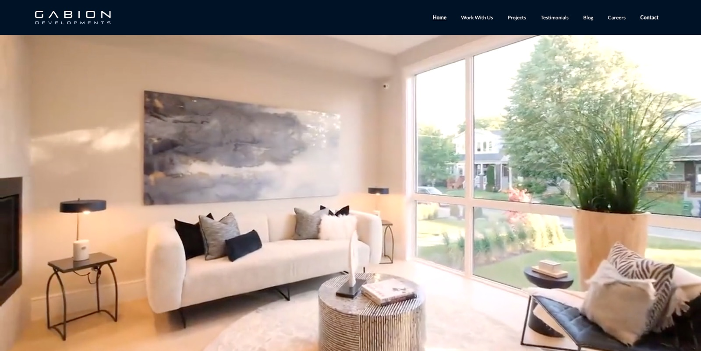
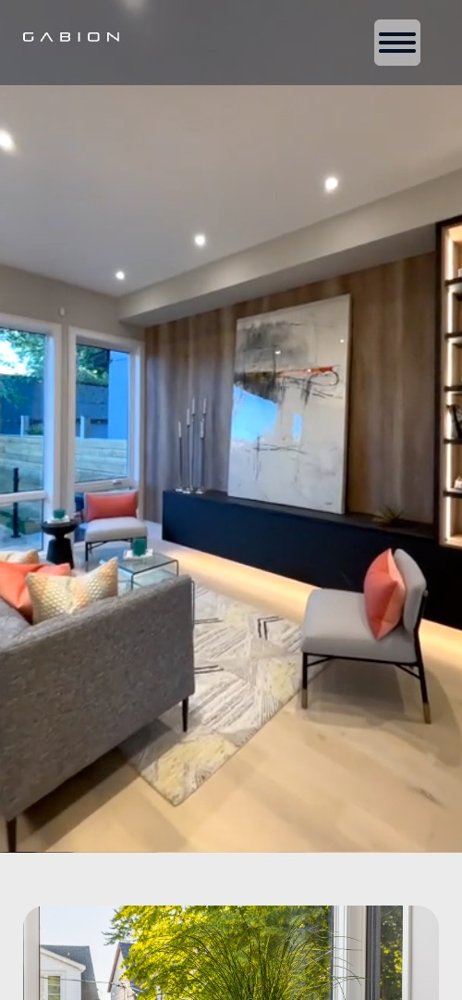
- ClientGabion Developments, Toronto
- My roleSole designer and site builder
- PlatformWebflow
- Timeline2 months, concept to launch
- ScopeIA, UX/UI, visual design, responsive build
Gabion needed a site to market its home developments, and to give prospective clients a professional way to find them.
- PlatformWebflow
- DeadlineTwo months
- TeamOne designer and builder: me
Sell with finished work
People judge a builder by what it has already built, so the site had to put real homes in front of visitors straight away.
Make the process feel manageable
Building or renovating a home is a big, unfamiliar decision. The site needed to show what happens, and in what order, before anyone picks up the phone.
Turn interest into a conversation
One clear next step, repeated across the site: book a call.
A flat structure with seven pages
The only nested level is the individual project pages, so nothing sits more than two clicks from the homepage.
Home
Video hero, welcome, philosophy, Book a Call banner
Work With Us
The four-stage journey
Projects
Selected work and upcoming projects (below)
Testimonials
Homeowner quotes; pick a name to read each one
Blog
Image gallery linking to Instagram
Careers
Join Our Team, with a link to current openings
Contact
Enquiry form with a “How did you hear about us?” field
Projects: Selected work
Finished projects, each with its own page.
Projects: Upcoming
Projects in the pipeline, shown as architectural drawings.
Open with a finished home
The homepage opens on a full-bleed video of a completed project, 111 Malvern Ave, with very little copy. The first thing a visitor sees is the product, not a pitch about the company. The welcome statement and philosophy come after, once the work has done its job.
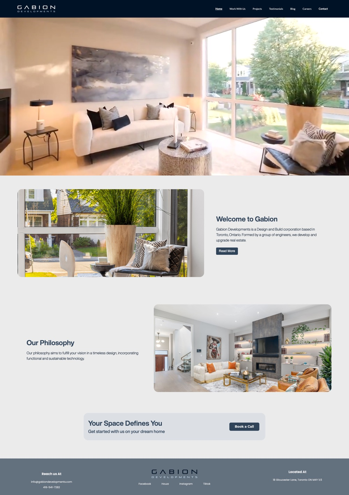
Let the photography carry the design
The interface is deliberately quiet: clean typography, generous white space and a restrained palette. Every page is built around large images, so the homes set the tone and the UI stays out of their way. Each project page leads with a photo carousel, keeps the write-up short, and links to the previous and next project so visitors can keep browsing.
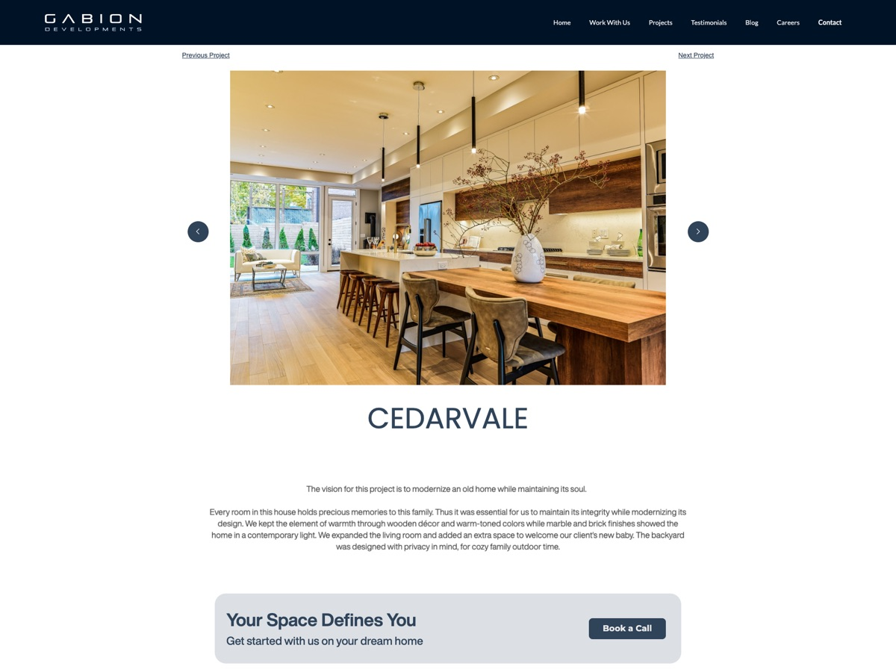
Separate what is built from what is coming
The Projects page splits Selected Work from Upcoming Projects. Finished homes are shown in photographs and each gets its own page. Upcoming ones are shown as architectural drawings, so the difference is clear at a glance. The site stays honest about what is complete, and still shows a visitor that the firm has a pipeline.
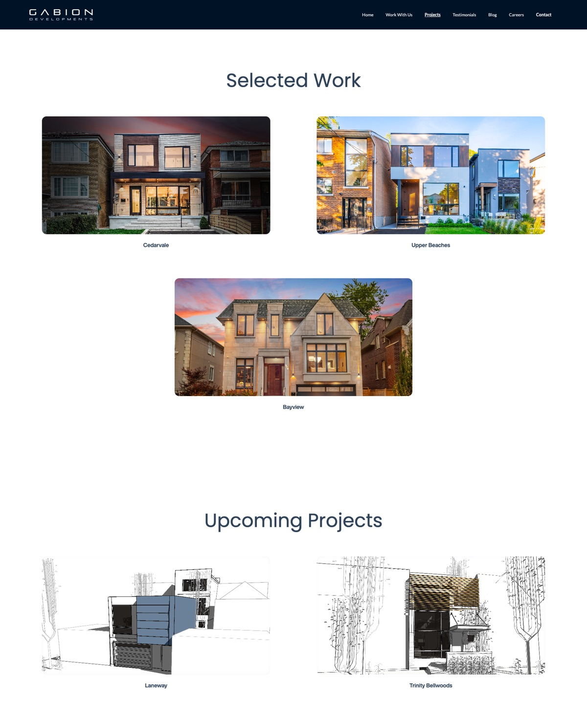
Show the process as four stages
Work With Us walks through Exploring, Imagining, Creating and Finalizing. Each stage explains what Gabion does at that point, such as visualizing design options and submitting the permit while Imagining, or monitoring construction while Creating. The images move from a pencil sketch to a rendering, a framing photo and the finished house, so the page shows the project taking shape.
It answers the question every first-time client has: what happens after I get in touch?
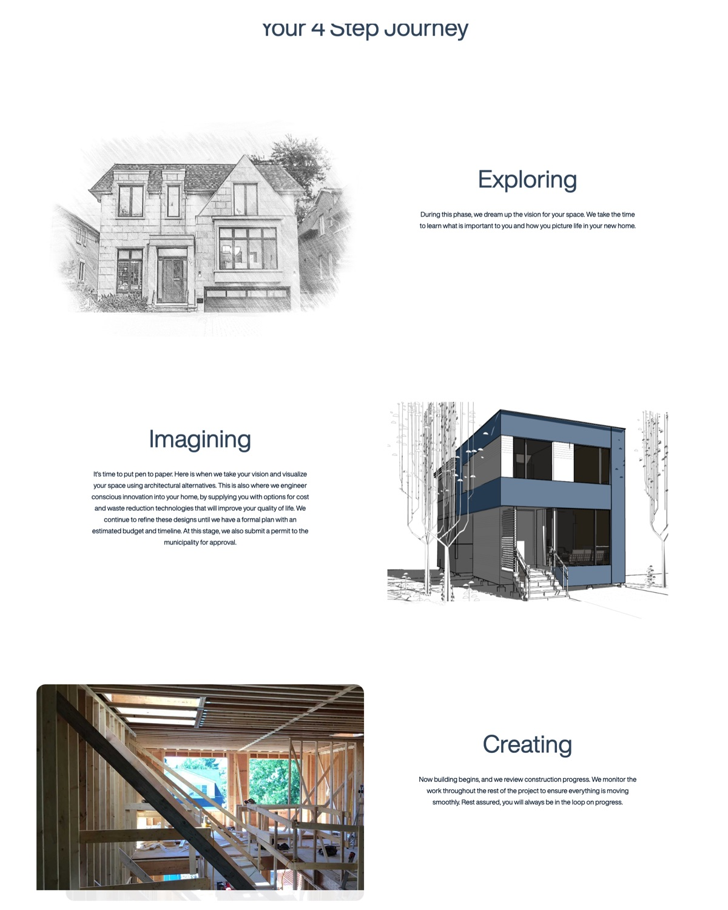
One call to action, repeated
Book a Call is the main way to start. A banner reading “Your Space Defines You” closes almost every page, from the homepage to each project and the contact page, so a visitor is never more than a scroll from the next step. The footer below it repeats the email, phone number and address. One primary action beats a menu of competing ones.
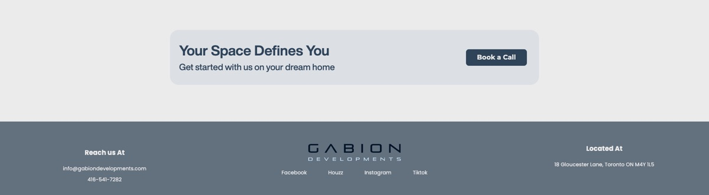
Proof from clients, and a blog that runs on Instagram
Testimonials gives homeowners' own words their own page: one quote at a time on desktop, chosen from a row of names, and the full list of quotes stacked on mobile. The Blog is a gallery of image tiles that link out to the firm's Instagram posts, so the team posts in one place and the site stays current without a second publishing job.
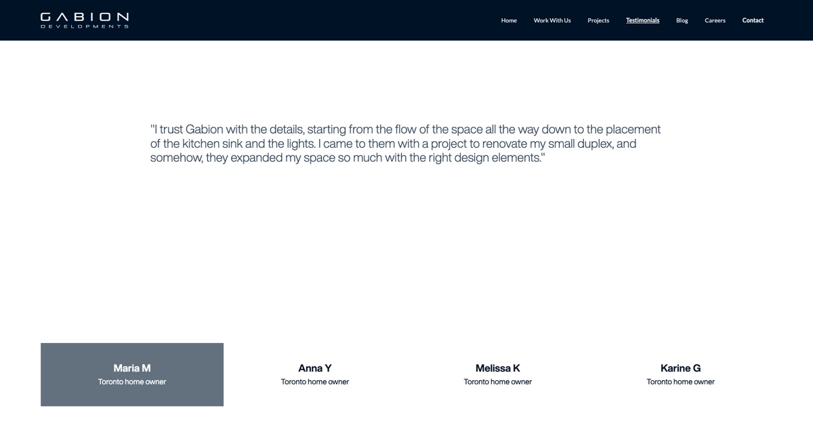
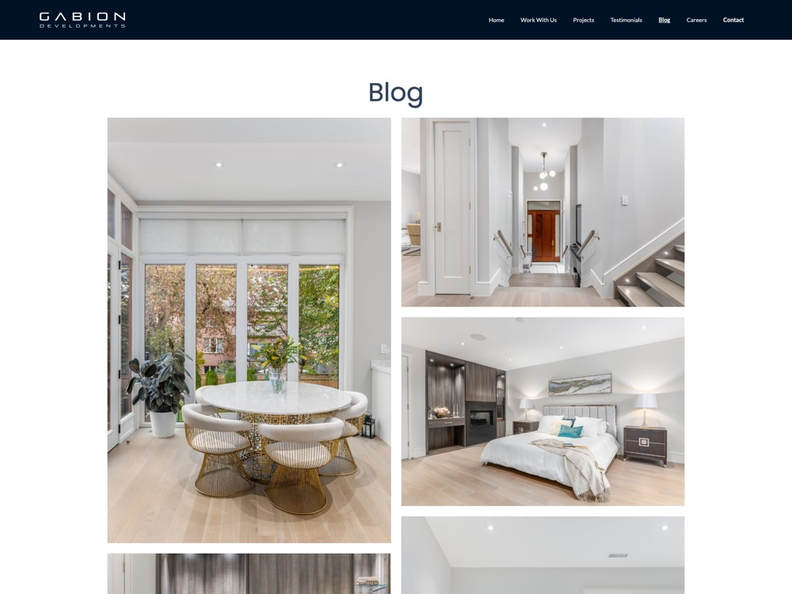
The navigation collapses behind a menu button, paired layouts stack image over text, and grids drop to one column. Components that rely on a wide screen change form: the testimonial selector becomes a simple list of every quote.
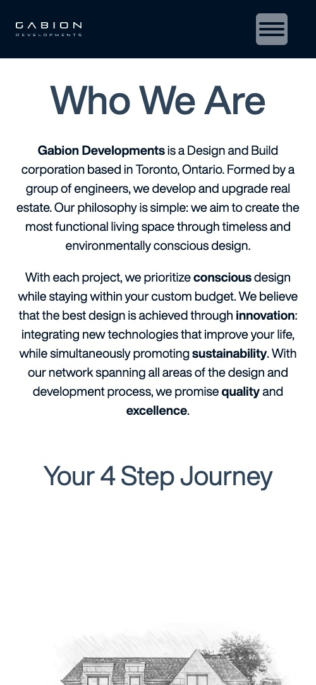
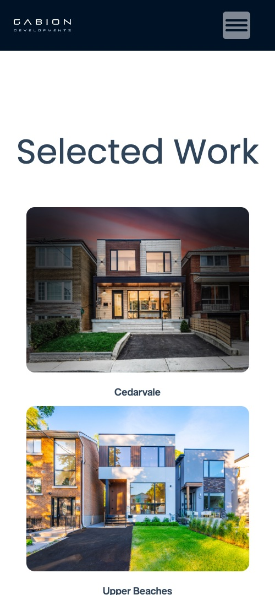
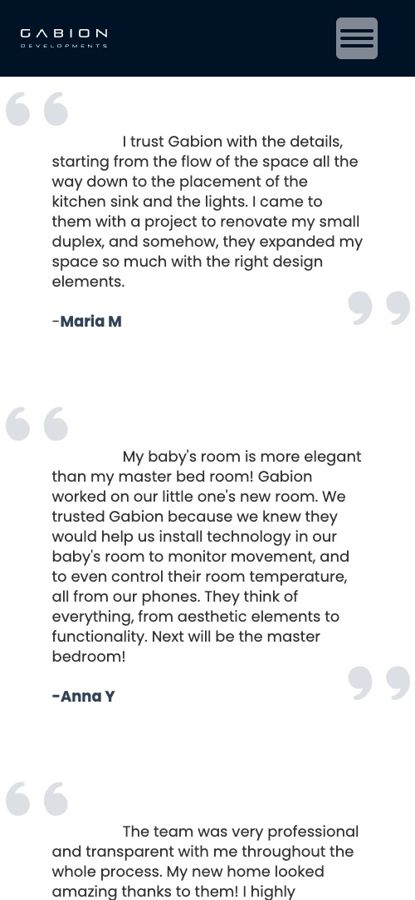
Two months, one person, four passes
I chose Webflow so the site could be designed and built in the same tool, and so the firm's team can edit copy and add new projects without a developer.
Structure
Mapped the seven pages and the path from a first visit to Book a Call.
Design
Set the typography, grid and image treatments so the photography leads.
Build
Built responsive pages in Webflow from reusable sections.
Launch
Checked every page across screen sizes, then went live.
A live site the firm can send people to
Gabion Developments now has a site that shows its work, explains how it works with clients and gives them a direct way to book a call.
Visit gabiondevelopments.com ↗